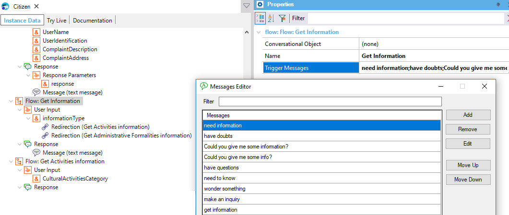
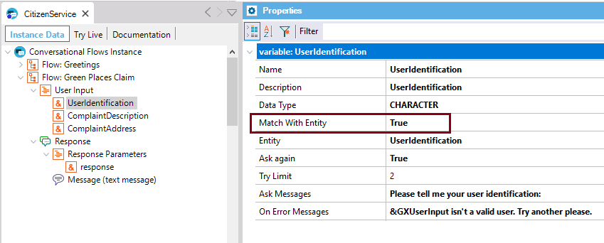
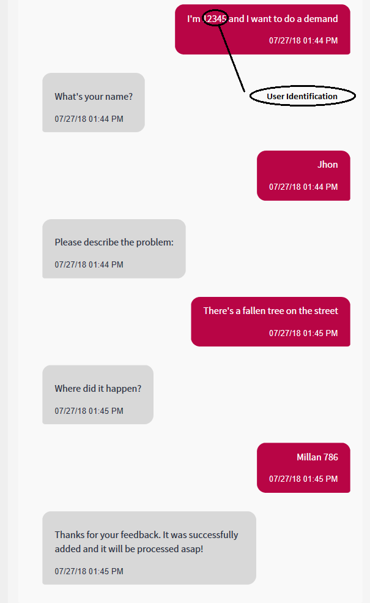

A Flow is executed after the intent has been detected. The user enters some keywords or clues which are used by the AI service to identify what the user wants (the intent). Those “clues” are called training phrases/messages, of the intent. In fact, they trigger the dialog that starts when the intent is detected. The should be configured at the Trigger Messages property of the Flow. You have to define the Trigger Messages for each intent (Flow), but you do not need to include all the combinations of the expressions because the underlying Artificial Intelligence collaborates to solve that issue. For example, a training message for the "Get Information" intent could be "have doubts." The following picture shows the way you need to define the intent's Trigger Messages property in the Conversational Flows instance.  The training message defined in the Trigger Messages property can include a reference to an Entity, so that the User Inputs that match that entity can be automatically inferred from the query, and won't be prompted to the user. Only in Watson, if the user's query includes any of the User Inputs (although the training message has no reference to the Entity), the user won't be asked to enter this input. In this case, the User input is recognized if it matches any entity value or an entity pattern. Besides, a User input can be inferred from another User Input in Watson. For example, the Flow "Green PlacesClaim" includes the User Input "UserIdentification" which should match an entity defined in the NLP provider.  If this entity is recognized in what the user has entered, the end user isn't asked to enter this information again (in this case, the "UserIdentification"). Note that the user is asked to enter the next User Input; in this case, the "ComplaintDescription."  Continuing with the flow, it can also be triggered when another Flow redirects to it (see Chatbot User Input Redirections). Then, if there is a Conversational Object set for the Flow, it is executed. For more information, see HowTo: Build a chatbot using GeneXus. See also |
| Backlinks |
| Toc:Chatbots in GeneXus |